Álvaro Ramírez
A tour of ready player mode
Ready Player Mode, which began as a tiny media-viewing experiment, has now become my daily music player.
Along the way, I moved from regular daily streaming to buying and playing music offline, relying on the odd streaming service exclusively for discovery. This setup's been working great so far. I get unrestricted playback (for life) with the occasional discovery session whenever I see fit.
Setup
Ready Player Mode runs in Emacs. You install it, enable its minor mode (for media recognition), and you're ready to go.
(use-package ready-player :ensure t :config (ready-player-mode +1))
Ready Player Mode will try to use either mpv, vlc, ffplay, or mplayer (in that order) to play media, but mpv works best.
Ready to go
Post setup, you can open media files like any other text file and Emacs will just play it for you. Say, open a dired buffer, navigate to a file, and open as usual.
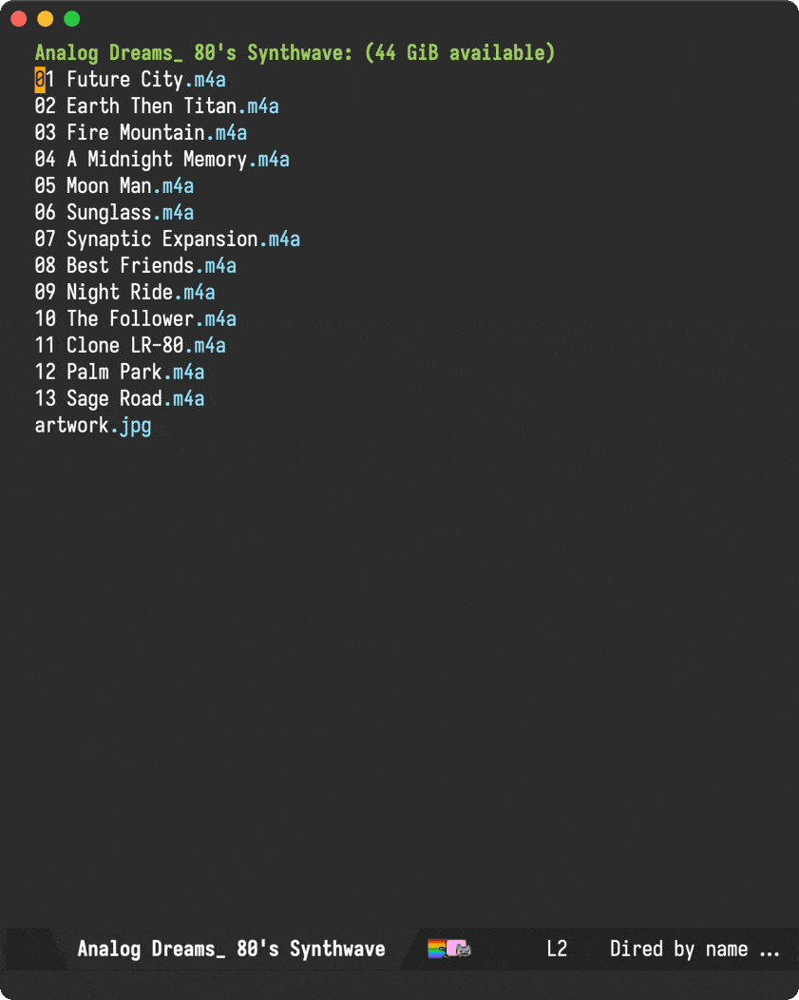
Buttons vs key bindings
If buttons are your cup of tea, use tab or backtab to navigate around.
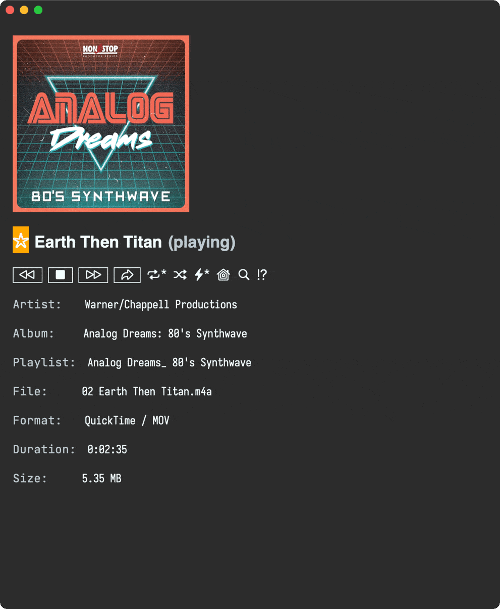
Alternatively, single-key bindings are available. You can find them all in the transient help menu, via the ? binding.
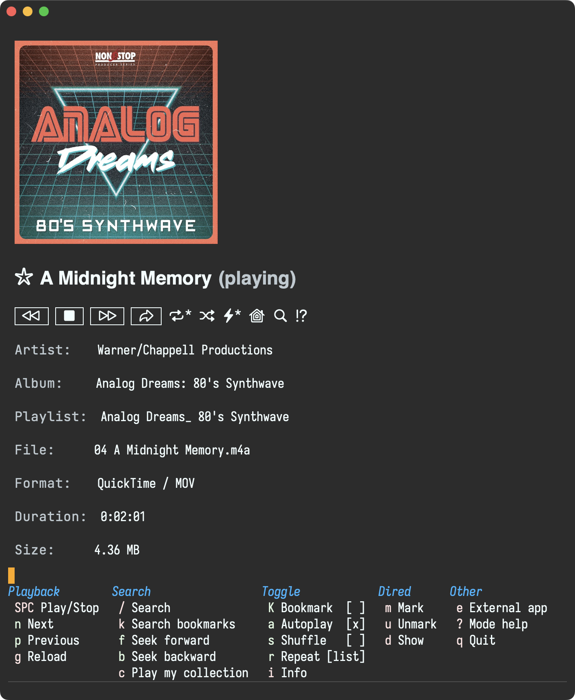
Global key bindings
Global key bindings are available, so you can interact with the player without switching buffers.
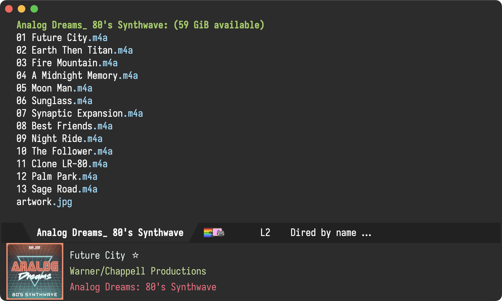
Global bindings are under the C-c m prefix.
| C-c m SPC | Toggle play/stop of media. |
| C-c m r | Cycle through repeat settings: file, directory, off. |
| C-c m m | Toggle switching between player buffer and previous buffer. |
| C-c m s | Toggle shuffle setting. |
| C-c m a | Toggle autoplay setting. |
| C-c m n | Open the next media file in the same directory. |
| C-c m c | Open my media collection. |
| C-c m i | Show playback info in the echo area. |
| C-c m p | Open the previous media file in the same directory. |
| C-c m / | Search the `dired' playlist for playback (experimental). |
If you prefer to use other bindings, disable default ones with:
(setq ready-player-set-global-bindings nil)
Open externally
You can always open the currently played file externally, using your system default player. This is bound to the e key.
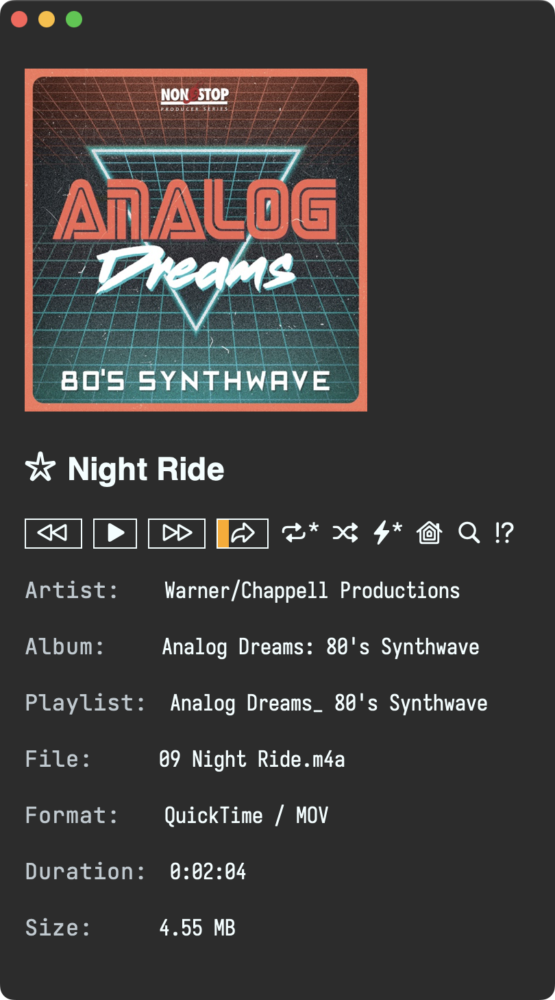
Repeat, shuffle, and autoplay
Repeat, shuffle, and autoplay should do what you'd expect and can be toggled via r s and a keys.
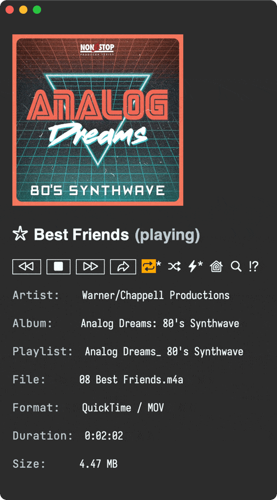
Play current directory
By default, Ready Player will continue playing other media found in the current directory. Use n and p bindings to move through different tracks.
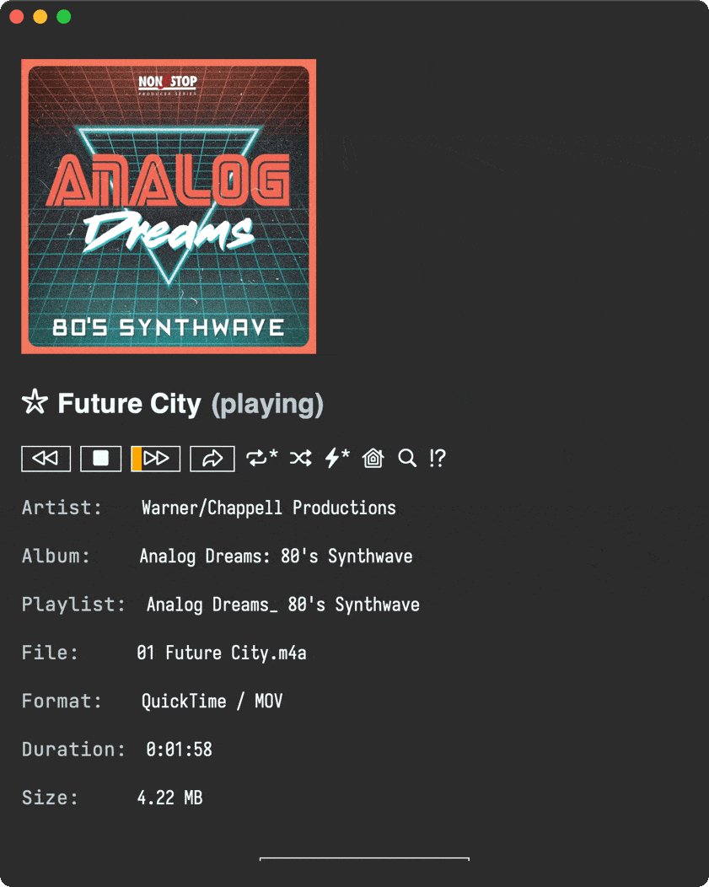
Seek
Ready Player works best with mpv player. If you have it installed, you can seek through tracks.
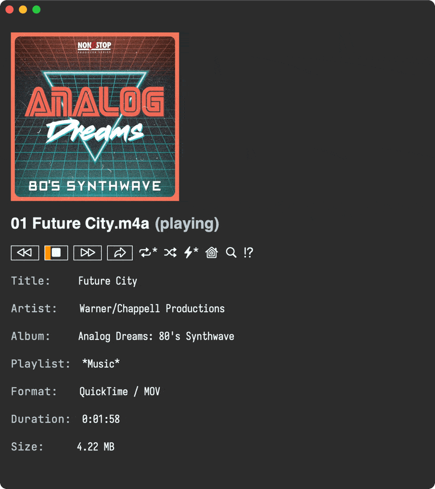
Play your collection
Ready Player can remember your music collection, but needs a tiny addition to the existing setup via the ready-player-my-media-collection-location variable.
(use-package ready-player :custom (ready-player-my-media-collection-location "~/path/to/your/music/collection") :config (ready-player-mode +1))
Your music collection is now available via the home button.
Index + search
Your music collection is automatically indexed. Same for the currently played directory, so you can search for tracks.
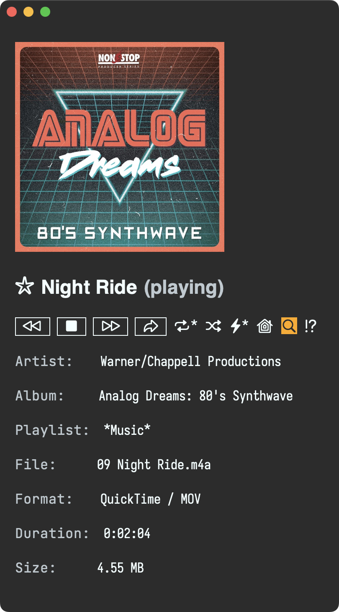
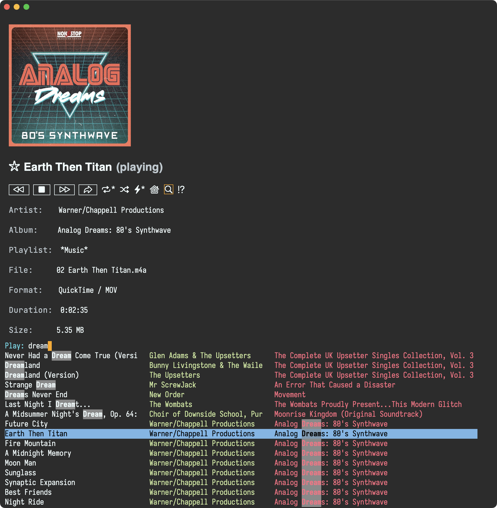
Bookmarking
This is a new feature inspired by tristanC's use of Emacs bookmarks with Ready Player. Bookmarks are now displayed and toggled from the player interface.
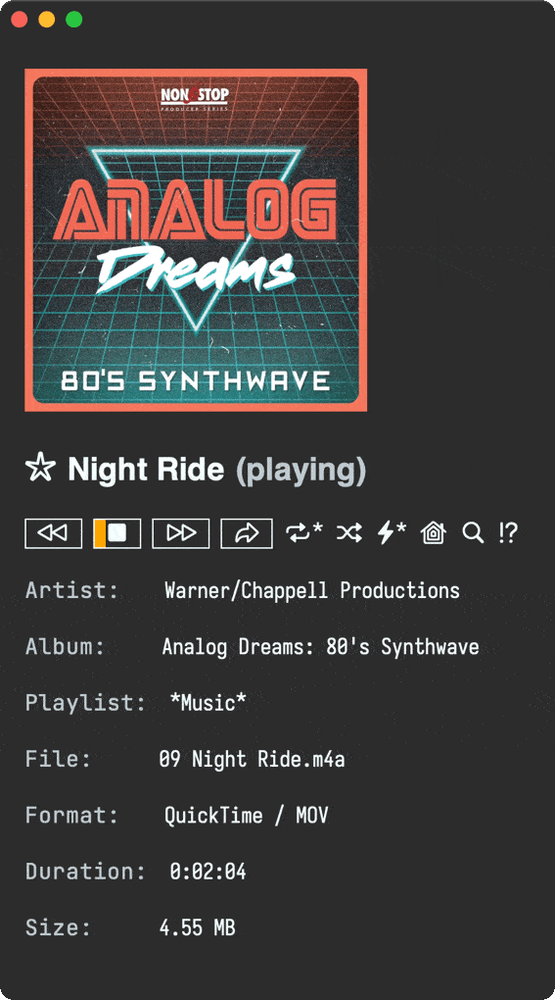
Bookmarks are searchable too.
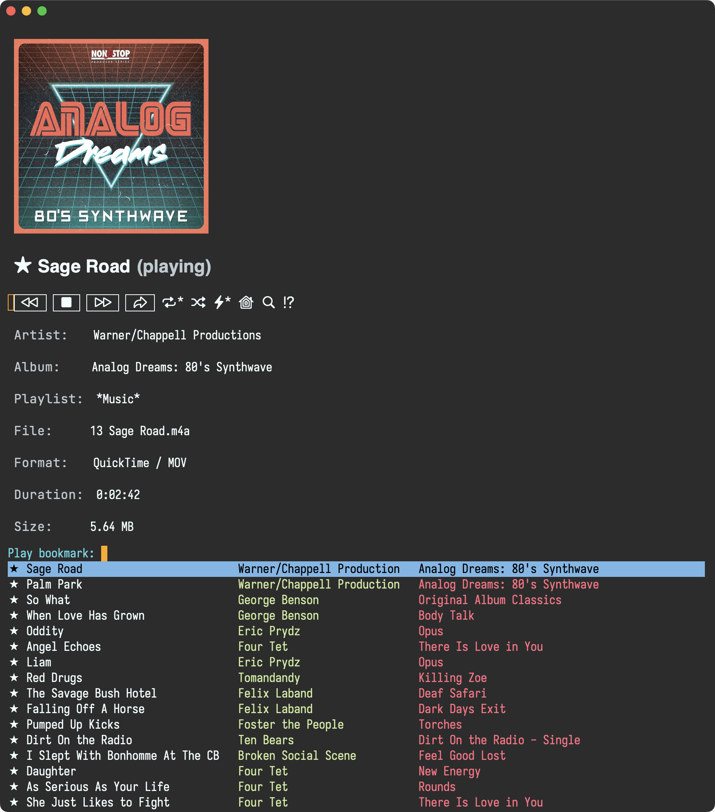
Download album cover
Missing album cover? Download it via M-x ready-player-download-album-artwork.
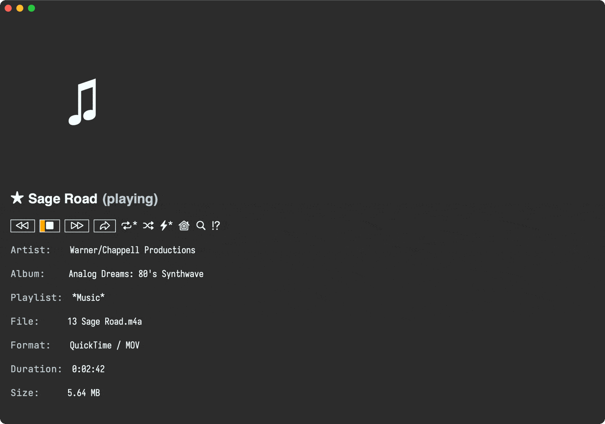
Embracing dired
I mentioned playing media from current directory or your music collection, but Ready Player is really just playing media from a dired buffer. If you can craft a dired buffer, Ready Player should be able to play it. Think find-dired.
Advanced features
Ready Player should be umm… ready to play with little configuration. If you want further customizations, check out its documentation.
Enjoy your unrestricted music offline, now and forever!
✨sponsor✨ this project.